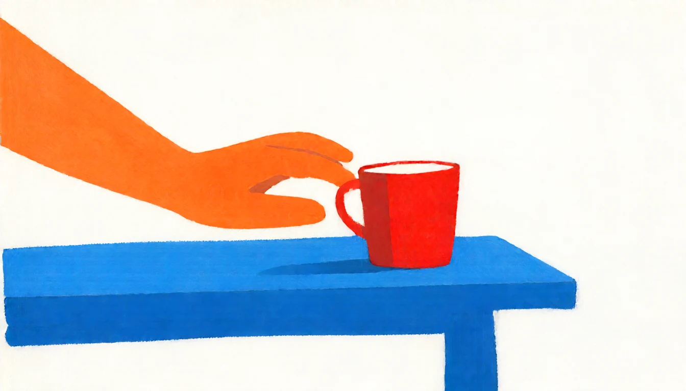

Interactive world / Dyson Swarm
A world above you
Stand inside a space habitat. Look up. The other side of the world is overhead.
Step into Another Sky ↗
I work on AI, and write about what happens next.
Sometimes the
essays become films. Sometimes, little worlds.
What if the model that writes your code also folds your laundry? An argument for taking AI’s physical future seriously.

Stand inside a space habitat. Look up. The other side of the world is overhead.
Step into Another Sky ↗
What I learned from a first-place finish in the NeurIPS 2025 EAI Challenge.
Read the write-up ↗New essays, films, and things to explore. A letter when there’s something worth sharing.

I’m an applied AI researcher at eBay, with an MS in computer science from UC San Diego. Paper Robots is where I turn the questions I keep thinking about into essays and films.